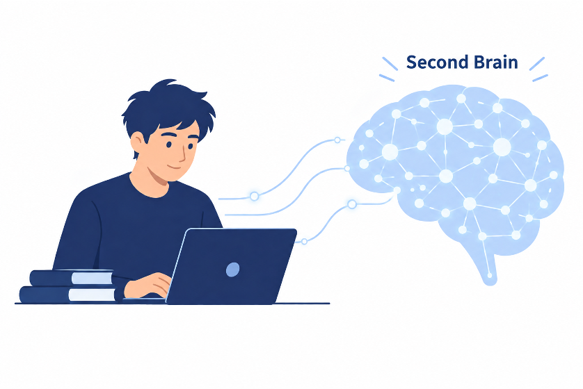
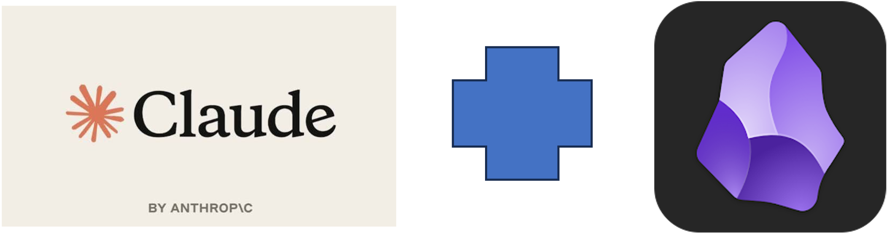

Building Your Persistent Second Brain: An AI-Assisted Research Workflow

An AI with no memory is a stranger every session. Open a new chat, and it doesn't know your research area, doesn't know which of your three active manuscripts you mean by "the paper," doesn't know you already ruled out that experimental design two weeks ago. You end up re-briefing it from scratch, every time, which defeats most of the point of having an assistant at all.
The fix isn't a smarter model - it's persistent context the assistant can read before it does anything else. Below is a system I've been running for managing multiple research projects in parallel, built on Claude Code and Obsidian, that gives the assistant a durable memory of who you are, what you're working on, and exactly where each project stands.
One root brain, not rigid layers
At the top sits a single root brain: a CLAUDE.md and a GOALS.md file. This is identity-level context - your research area, your supervisor, your thesis timeline - the things that are true regardless of which specific paper you're working on this week. It isn't built once and forgotten; it's built through a structured brain-setup interview the first time, then edited over time as your focus shifts.
Project folders branch off this root. There's no separate "layer" architecture to maintain - just a root file with context that applies everywhere, and project folders that add specifics on top of it. When you open a project, the assistant reads both: who you are, and what this particular paper needs right now.
Two project types, not one generic template
A research paper and a review paper don't move through the same stages, so forcing them into one generic template means either missing stages one type needs or cluttering the other with irrelevant ones. Instead, there are two templates:
- Research Paper: Lit Review → Hypothesis → Experiments & Data → Results & Analysis → Draft → Submission → Revision
- Review Paper: Literature Collection → Synthesis & Outline → Draft → Submission → Revision
Each project's own CLAUDE.md names its current stage explicitly. That one line is what lets a session pick up exactly where the last one left off, instead of the assistant guessing from context clues or asking you to re-explain.
The literature pipeline
Reading papers generates the most friction in any research workflow, so this is the most mechanical part of the system by design:
Literature flow
1. Download paper
2. Rename: FirstAuthor_Year_ShortTopic.pdf
3. Run the summarize-paper skill
4. Skill writes a fixed-shape note:
- Question
- Method
- Result
- Relevance to hypothesis
- Gaps
- Takeaway
5. Note auto-appends a row to Literature Tracker.mdThe fixed shape matters more than it looks. A free-form summary is pleasant to read once and useless to search six months later when you're trying to remember which of forty papers actually addressed your specific gap. A fixed shape means every note answers the same questions in the same order, so Literature Tracker.md becomes a genuinely queryable table instead of a pile of loosely related notes.
The manuscript stays tool-agnostic
The vault deliberately does not try to become your writing environment. It holds a pointer to wherever the manuscript actually lives, a version log, and an outline - nothing more. The writing itself happens in Overleaf, Word, or whatever you already use. This is a deliberate boundary: a knowledge-management system that tries to also be your LaTeX editor ends up doing both jobs poorly. Keeping them separate means you can adopt this system without changing how you actually write.
What's deliberately left out
This system is scoped to the actual scholarship - literature, hypotheses, experiments, drafts - not the administrative layer that surrounds a faculty position. Grant writing and teaching prep are deliberately excluded. Trying to cover everything a researcher does would dilute the parts that matter most: keeping a clear thread through a research project from open question to submitted manuscript.
Four skills, not a monolith
The system runs on four narrow, reusable skills rather than one do-everything assistant configuration:
- brain-setup - the structured interview that builds the root
CLAUDE.mdandGOALS.mdthe first time you set this up. - new-project - scaffolds a new project folder from the Research Paper or Review Paper template, with its own stage-tracking
CLAUDE.md. - summarize-paper - runs the literature pipeline above: reads a downloaded PDF and produces the fixed-shape note plus the tracker row.
- weekly-update - reviews what changed across active projects and surfaces a short status summary, so you can see progress (or the lack of it) at a glance.
Setting it up
Claude Code installs Obsidian and the Claudian plugin, and the vault opens directly in Obsidian. On first use, activate Claudian with Ctrl/Cmd+P. From there, the brain-setup interview walks you through building the root files, and every subsequent project starts with new-project rather than a blank folder.

The payoff isn't a fancier assistant - it's the same assistant, minus the constant re-briefing. A well-kept second brain means every session starts from where you actually are in the project, not from zero.
Get the template
The root brain structure, both project templates, and the four skills described above are available as a ready-to-use Obsidian vault template.
If you're setting up a similar workflow for your own research group or want to talk through adapting this for a specific field, get in touch.